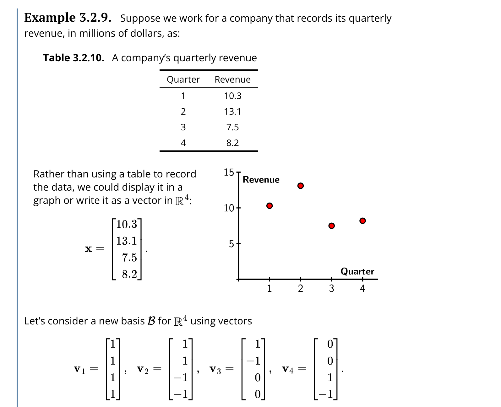
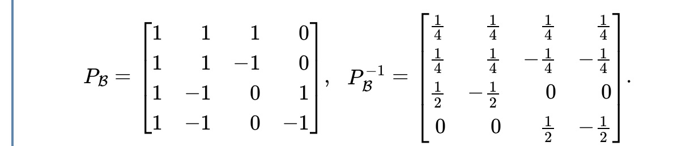

Print preview
Worksheet \(\S 3.2\text{:}\) Bases Examples
2. Changing Bases: Quarterly Analysis.


3. Activity: Change of Bases and Edge Detection.
An important problem in the field of computer vision is to detect edges in a digital photograph, as is shown in Figure 23. Edge detection algorithms are useful when, say, we want a robot to locate an object in its field of view. Graphic designers also use these algorithms to create artistic effects.


We will consider a very simple version of an edge detection algorithm to give a sense of how this works. Rather than considering a two-dimensional photograph, we will think about a one-dimensional row of pixels in a photograph. The grayscale values of a pixel measure the brightness of a pixel; a grayscale value of 0 corresponds to black, and a value of 255 corresponds to white.
Suppose, for simplicity, that the grayscale values for a row of six pixels are represented by a vector \(\xvec\) in \(\real^6\text{:}\)
\begin{equation*}
\xvec = \left[\begin{array}{r}
25 \\ 34 \\ 30 \\ 45 \\ 190 \\ 200
\end{array}\right]\text{.}
\end{equation*}
4. Activity (continued).
We can easily see that there is a jump in brightness between pixels 4 and 5, but how can we detect it computationally? We will introduce a new basis \(\bcal\) for \(\real^6\) with vectors:
\begin{equation*}
\vvec_1=\left[\begin{array}{r} 1 \\ 0 \\ 0 \\ 0 \\ 0
\\ 0 \end{array}\right],
\vvec_2=\left[\begin{array}{r} 1 \\ 1 \\ 0 \\ 0 \\ 0
\\ 0 \end{array}\right],
\vvec_3=\left[\begin{array}{r} 1 \\ 1 \\ 1 \\ 0 \\ 0
\\ 0 \end{array}\right],
\vvec_4=\left[\begin{array}{r} 1 \\ 1 \\ 1 \\ 1 \\ 0
\\ 0 \end{array}\right],
\vvec_5=\left[\begin{array}{r} 1 \\ 1 \\ 1 \\ 1 \\ 1
\\ 0 \end{array}\right],
\vvec_6=\left[\begin{array}{r} 1 \\ 1 \\ 1 \\ 1 \\ 1
\\ 1 \end{array}\right]\text{.}
\end{equation*}
-
Construct the matrix \(P_\bcal\) that relates the standard coordinate system with the coordinates in the basis \(\bcal\text{.}\)
-
Determine the matrix \(P_\bcal^{-1}\) that converts the representation of \(\xvec\) in standard coordinates into the coordinate system defined by \(\bcal\text{.}\)
-
Suppose the vectors are expressed in general terms as\begin{equation*} \xvec = \left[\begin{array}{r} x_1 \\ x_2 \\ x_3 \\ x_4 \\ x_5 \\ x_6 \end{array}\right],~~~ \coords{\xvec}{\bcal} = \left[\begin{array}{r} c_1 \\ c_2 \\ c_3 \\ c_4 \\ c_5 \\ c_6 \end{array}\right]\text{.} \end{equation*}Using the relationship \(\coords{\xvec}{\bcal} = P_{\bcal}^{-1}\xvec\text{,}\) determine an expression for the coefficient \(c_2\) in terms of \(x_1,x_2,\ldots,x_6\text{.}\) What does \(c_2\) measure in terms of the grayscale values of the pixels? What does \(c_4\) measure in terms of the grayscale values of the pixels?
-
Now for the specific vector\begin{equation*} \xvec = \left[\begin{array}{r} 25 \\ 34 \\ 30 \\ 45 \\ 190 \\ 200 \end{array}\right]\text{,} \end{equation*}determine the representation of \(\xvec\) in the \(\bcal\)-coordinate system.
-
Explain how the coefficients in \(\coords{\xvec}{\bcal}\) determine the location of the jump in brightness in the grayscale values represented by the vector \(\xvec\text{.}\)
Readers who are familiar with calculus may recognize that this change of basis converts a vector \(\xvec\) into \(\coords{\xvec}{\bcal}\text{,}\) the set of changes in \(\xvec\text{.}\) This process is similar to differentiation in calculus. Similarly, the process of converting \(\coords{\xvec}{\bcal}\) into the vector \(\xvec\) adds together the changes in a process similar to integration. As a result, this change of basis represents a linear algebraic version of the Fundamental Theorem of Calculus.